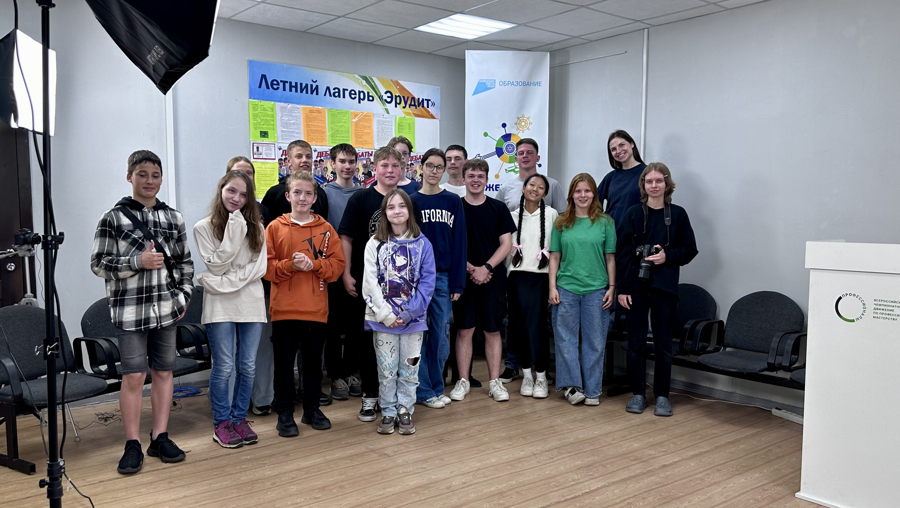

МУНИЦИПАЛЬНОЕ БЮДЖЕТНОЕ УЧРЕЖДЕНИЕ ДОПОЛНИТЕЛЬНОГО ОБРАЗОВАНИЯ «КИРОВСКИЙ ЦЕНТР ИНФОРМАЦИОННЫХ ТЕХНОЛОГИЙ»
2024 | июнь | 4
Тридцать детей из Кировского района 11 - 17 лет отправились на встречу ярким приключениям, профессиональным знаниям, новым друзьям и незабываемым воспоминаниям! Кировский ЦИТ наполнился детским смехом и веселым шумом. Смена обещает пройти задорно и продуктивно.
ИНТЕРЕСНАЯ ДИСКУССИЯ
11 июня на базе летнего оздоровительного лагеря «Эрудит» прошли дебаты с ведущим Андреем Юрьевичем Степановым. В центре внимания важная и интересная тема: «может ли интернет-образование заменить школу?» В дебатах участвовала команда журналистов, поддерживая мысль, что интернет не может заменить учёбу в школе, и команда мехатронщиков, выступая за то, что интернет-образование лучше, чем школьное. Участница дебатов Лиза Мансурова поделилась своими впечатлениями, полученными от этой дискуссии: «Обе стороны обменялись своими мыслями по поставленному вопросу, все участники вели себя организованно. Главной целью было доказать свою точку зрения не противникам, а своей аудитории, с чем участники хорошо справились, сформировав у зрителей мнения по теме вопроса и даже заставив некоторых из них изменить свою точку зрения.» Дебаты прошли отлично, тема дискуссии была раскрыта, все присутствовавшие получили классные впечатления и хорошо провели время!